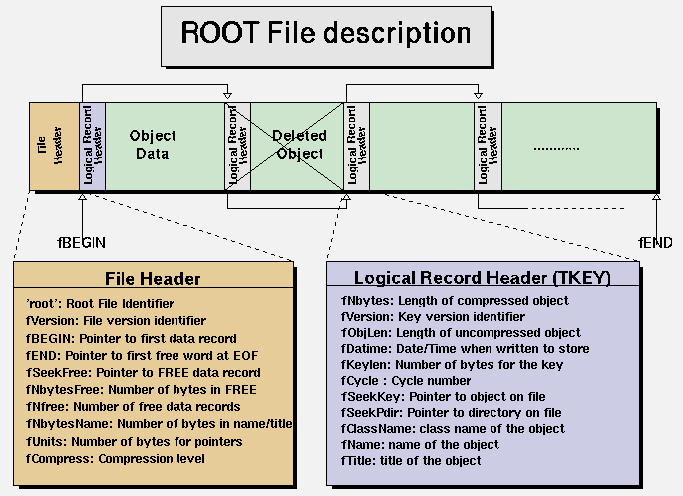
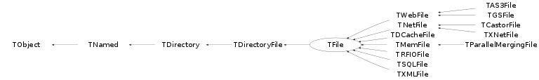

class TFile: public TDirectoryFile
A ROOT file is a suite of consecutive data records (TKey's) with the following format (see also the TKey class). If the key is located past the 32 bit file limit (> 2 GB) then some fields will be 8 instead of 4 bytes: 1->4 Nbytes = Length of compressed object (in bytes) 5->6 Version = TKey version identifier 7->10 ObjLen = Length of uncompressed object 11->14 Datime = Date and time when object was written to file 15->16 KeyLen = Length of the key structure (in bytes) 17->18 Cycle = Cycle of key 19->22 [19->26] SeekKey = Pointer to record itself (consistency check) 23->26 [27->34] SeekPdir = Pointer to directory header 27->27 [35->35] lname = Number of bytes in the class name 28->.. [36->..] ClassName = Object Class Name ..->.. lname = Number of bytes in the object name ..->.. Name = lName bytes with the name of the object ..->.. lTitle = Number of bytes in the object title ..->.. Title = Title of the object -----> DATA = Data bytes associated to the object The first data record starts at byte fBEGIN (currently set to kBEGIN). Bytes 1->kBEGIN contain the file description, when fVersion >= 1000000 it is a large file (> 2 GB) and the offsets will be 8 bytes long and fUnits will be set to 8: 1->4 "root" = Root file identifier 5->8 fVersion = File format version 9->12 fBEGIN = Pointer to first data record 13->16 [13->20] fEND = Pointer to first free word at the EOF 17->20 [21->28] fSeekFree = Pointer to FREE data record 21->24 [29->32] fNbytesFree = Number of bytes in FREE data record 25->28 [33->36] nfree = Number of free data records 29->32 [37->40] fNbytesName = Number of bytes in TNamed at creation time 33->33 [41->41] fUnits = Number of bytes for file pointers 34->37 [42->45] fCompress = Compression level and algorithm 38->41 [46->53] fSeekInfo = Pointer to TStreamerInfo record 42->45 [54->57] fNbytesInfo = Number of bytes in TStreamerInfo record 46->63 [58->75] fUUID = Universal Unique ID/*  */
The structure of a directory is shown in TDirectoryFile::TDirectoryFile
Function Members (Methods)
public:
| TFile() | |
| TFile(const char* fname, Option_t* option = "", const char* ftitle = "", Int_t compress = 1) | |
| virtual | ~TFile() |
| void | TObject::AbstractMethod(const char* method) const |
| virtual void | TDirectoryFile::Add(TObject* obj, Bool_t replace = kFALSE) |
| static void | TDirectory::AddDirectory(Bool_t add = kTRUE) |
| static Bool_t | TDirectory::AddDirectoryStatus() |
| virtual void | TDirectoryFile::Append(TObject* obj, Bool_t replace = kFALSE) |
| virtual Int_t | TDirectoryFile::AppendKey(TKey* key) |
| virtual void | TObject::AppendPad(Option_t* option = "") |
| static TFileOpenHandle* | AsyncOpen(const char* name, Option_t* option = "", const char* ftitle = "", Int_t compress = 1, Int_t netopt = 0) |
| virtual void | TDirectoryFile::Browse(TBrowser* b) |
| virtual void | TDirectoryFile::Build(TFile* motherFile = 0, TDirectory* motherDir = 0) |
| virtual Bool_t | TDirectoryFile::cd(const char* path = 0) |
| static Bool_t | TDirectory::Cd(const char* path) |
| static TClass* | Class() |
| virtual const char* | TObject::ClassName() const |
| virtual void | TDirectory::Clear(Option_t* option = "") |
| virtual TObject* | TNamed::Clone(const char* newname = "") const |
| virtual TObject* | TDirectoryFile::CloneObject(const TObject* obj, Bool_t autoadd = kTRUE) |
| virtual void | Close(Option_t* option = "")MENU |
| virtual Int_t | TNamed::Compare(const TObject* obj) const |
| virtual void | Copy(TObject&) const |
| virtual Bool_t | Cp(const char* dst, Bool_t progressbar = kTRUE, UInt_t buffersize = 1000000) |
| static Bool_t | Cp(const char* src, const char* dst, Bool_t progressbar = kTRUE, UInt_t buffersize = 1000000) |
| virtual TKey* | CreateKey(TDirectory* mother, const TObject* obj, const char* name, Int_t bufsize) |
| virtual TKey* | CreateKey(TDirectory* mother, const void* obj, const TClass* cl, const char* name, Int_t bufsize) |
| static TDirectory*& | TDirectory::CurrentDirectory() |
| static TFile*& | CurrentFile() |
| static void | TDirectory::DecodeNameCycle(const char* namecycle, char* name, Short_t& cycle) |
| virtual void | Delete(const char* namecycle = "") |
| virtual void | TDirectory::DeleteAll(Option_t* option = "") |
| virtual Int_t | TObject::DistancetoPrimitive(Int_t px, Int_t py) |
| virtual void | Draw(Option_t* option = "") |
| virtual void | TObject::DrawClass() constMENU |
| virtual TObject* | TObject::DrawClone(Option_t* option = "") constMENU |
| virtual void | DrawMap(const char* keys = "*", Option_t* option = "")MENU |
| virtual void | TObject::Dump() constMENU |
| static void | TDirectory::EncodeNameCycle(char* buffer, const char* name, Short_t cycle) |
| virtual void | TObject::Error(const char* method, const char* msgfmt) const |
| virtual void | TObject::Execute(const char* method, const char* params, Int_t* error = 0) |
| virtual void | TObject::Execute(TMethod* method, TObjArray* params, Int_t* error = 0) |
| virtual void | TObject::ExecuteEvent(Int_t event, Int_t px, Int_t py) |
| virtual void | TObject::Fatal(const char* method, const char* msgfmt) const |
| virtual void | FillBuffer(char*& buffer) |
| virtual TKey* | TDirectoryFile::FindKey(const char* keyname) const |
| virtual TKey* | TDirectoryFile::FindKeyAny(const char* keyname) const |
| virtual TObject* | TDirectory::FindObject(const char* name) const |
| virtual TObject* | TDirectory::FindObject(const TObject* obj) const |
| virtual TObject* | TDirectoryFile::FindObjectAny(const char* name) const |
| virtual TObject* | TDirectoryFile::FindObjectAnyFile(const char* name) const |
| virtual void | Flush() |
| virtual TObject* | TDirectoryFile::Get(const char* namecycle) |
| TArchiveFile* | GetArchive() const |
| Long64_t | GetArchiveOffset() const |
| static TFile::EAsyncOpenStatus | GetAsyncOpenStatus(const char* name) |
| static TFile::EAsyncOpenStatus | GetAsyncOpenStatus(TFileOpenHandle* handle) |
| Int_t | GetBestBuffer() const |
| virtual Int_t | TDirectoryFile::GetBufferSize() const |
| virtual Long64_t | GetBytesRead() const |
| virtual Long64_t | GetBytesReadExtra() const |
| virtual Int_t | GetBytesToPrefetch() const |
| virtual Long64_t | GetBytesWritten() const |
| static const char* | GetCacheFileDir() |
| TFileCacheRead* | GetCacheRead() const |
| TFileCacheWrite* | GetCacheWrite() const |
| TArrayC* | GetClassIndex() const |
| Int_t | GetCompressionAlgorithm() const |
| Float_t | GetCompressionFactor() |
| Int_t | GetCompressionLevel() const |
| Int_t | GetCompressionSettings() const |
| const TDatime& | TDirectoryFile::GetCreationDate() const |
| virtual TDirectory* | TDirectoryFile::GetDirectory(const char* apath, Bool_t printError = false, const char* funcname = "GetDirectory") |
| virtual Option_t* | TObject::GetDrawOption() const |
| static Long_t | TObject::GetDtorOnly() |
| virtual Long64_t | GetEND() const |
| virtual const TUrl* | GetEndpointUrl() const |
| static const TUrl* | GetEndpointUrl(const char* name) |
| virtual Int_t | GetErrno() const |
| Int_t | GetFd() const |
| virtual TFile* | TDirectoryFile::GetFile() const |
| static Long64_t | GetFileBytesRead() |
| static Long64_t | GetFileBytesWritten() |
| static Long64_t | GetFileCounter() |
| static Int_t | GetFileReadCalls() |
| virtual const char* | TObject::GetIconName() const |
| virtual TKey* | TDirectoryFile::GetKey(const char* name, Short_t cycle = 9999) const |
| virtual TList* | TDirectory::GetList() const |
| TList* | GetListOfFree() const |
| virtual TList* | TDirectoryFile::GetListOfKeys() const |
| TObjArray* | GetListOfProcessIDs() const |
| const TDatime& | TDirectoryFile::GetModificationDate() const |
| virtual TObject* | TDirectory::GetMother() const |
| virtual TDirectory* | TDirectory::GetMotherDir() const |
| virtual const char* | TNamed::GetName() const |
| virtual Int_t | GetNbytesFree() const |
| virtual Int_t | GetNbytesInfo() const |
| virtual Int_t | TDirectoryFile::GetNbytesKeys() const |
| virtual Int_t | GetNfree() const |
| virtual Int_t | TDirectoryFile::GetNkeys() const |
| virtual Int_t | GetNProcessIDs() const |
| void | TDirectory::GetObject(const char* namecycle, void*& ptr) |
| virtual void* | TDirectoryFile::GetObjectChecked(const char* namecycle, const char* classname) |
| virtual void* | TDirectoryFile::GetObjectChecked(const char* namecycle, const TClass* cl) |
| virtual char* | TObject::GetObjectInfo(Int_t px, Int_t py) const |
| static Bool_t | TObject::GetObjectStat() |
| virtual void* | TDirectoryFile::GetObjectUnchecked(const char* namecycle) |
| static Bool_t | GetOnlyStaged() |
| static UInt_t | GetOpenTimeout() |
| virtual Option_t* | GetOption() const |
| virtual const char* | TDirectory::GetPath() const |
| virtual const char* | TDirectory::GetPathStatic() const |
| static Int_t | GetReadaheadSize() |
| virtual Int_t | GetReadCalls() const |
| Int_t | GetRecordHeader(char* buf, Long64_t first, Int_t maxbytes, Int_t& nbytes, Int_t& objlen, Int_t& keylen) |
| Long64_t | GetRelOffset() const |
| virtual Long64_t | TDirectoryFile::GetSeekDir() const |
| virtual Long64_t | GetSeekFree() const |
| virtual Long64_t | GetSeekInfo() const |
| virtual Long64_t | TDirectoryFile::GetSeekKeys() const |
| virtual Long64_t | TDirectoryFile::GetSeekParent() const |
| virtual Long64_t | GetSize() const |
| const TList* | GetStreamerInfoCache() |
| virtual TList* | GetStreamerInfoList() |
| virtual const char* | TNamed::GetTitle() const |
| static TFile::EFileType | GetType(const char* name, Option_t* option = "", TString* prefix = 0) |
| virtual UInt_t | TObject::GetUniqueID() const |
| TUUID | TDirectory::GetUUID() const |
| Int_t | GetVersion() const |
| virtual Bool_t | TObject::HandleTimer(TTimer* timer) |
| virtual ULong_t | TNamed::Hash() const |
| static void | IncrementFileCounter() |
| virtual void | IncrementProcessIDs() |
| virtual void | TObject::Info(const char* method, const char* msgfmt) const |
| virtual Bool_t | TObject::InheritsFrom(const char* classname) const |
| virtual Bool_t | TObject::InheritsFrom(const TClass* cl) const |
| virtual void | TObject::Inspect() constMENU |
| void | TObject::InvertBit(UInt_t f) |
| virtual TClass* | IsA() const |
| virtual Bool_t | IsArchive() const |
| Bool_t | IsBinary() const |
| virtual Bool_t | TObject::IsEqual(const TObject* obj) const |
| virtual Bool_t | TDirectory::IsFolder() const |
| virtual Bool_t | TDirectoryFile::IsModified() const |
| Bool_t | TObject::IsOnHeap() const |
| virtual Bool_t | IsOpen() const |
| Bool_t | IsRaw() const |
| virtual Bool_t | TNamed::IsSortable() const |
| virtual Bool_t | TDirectoryFile::IsWritable() const |
| Bool_t | TObject::IsZombie() const |
| virtual void | ls(Option_t* option = "") const |
| virtual void | MakeFree(Long64_t first, Long64_t last) |
| virtual void | MakeProject(const char* dirname, const char* classes = "*", Option_t* option = "new")MENU |
| virtual void | Map()MENU |
| virtual Bool_t | Matches(const char* name) |
| void | TObject::MayNotUse(const char* method) const |
| virtual TDirectory* | TDirectoryFile::mkdir(const char* name, const char* title = "") |
| virtual Bool_t | MustFlush() const |
| virtual Bool_t | TObject::Notify() |
| void | TObject::Obsolete(const char* method, const char* asOfVers, const char* removedFromVers) const |
| static TFile* | Open(TFileOpenHandle* handle) |
| static TFile* | Open(const char* name, Option_t* option = "", const char* ftitle = "", Int_t compress = 1, Int_t netopt = 0) |
| virtual TFile* | TDirectoryFile::OpenFile(const char* name, Option_t* option = "", const char* ftitle = "", Int_t compress = 1, Int_t netopt = 0) |
| static void | TObject::operator delete(void* ptr) |
| static void | TObject::operator delete(void* ptr, void* vp) |
| static void | TObject::operator delete[](void* ptr) |
| static void | TObject::operator delete[](void* ptr, void* vp) |
| void* | TObject::operator new(size_t sz) |
| void* | TObject::operator new(size_t sz, void* vp) |
| void* | TObject::operator new[](size_t sz) |
| void* | TObject::operator new[](size_t sz, void* vp) |
| virtual void | Paint(Option_t* option = "") |
| virtual void | TObject::Pop() |
| virtual void | Print(Option_t* option = "") const |
| virtual void | TDirectoryFile::Purge(Short_t nkeep = 1) |
| virtual void | TDirectory::pwd() const |
| virtual Int_t | TObject::Read(const char* name) |
| virtual void | TDirectoryFile::ReadAll(Option_t* option = "") |
| virtual Bool_t | ReadBuffer(char* buf, Int_t len) |
| virtual Bool_t | ReadBuffer(char* buf, Long64_t pos, Int_t len) |
| virtual Bool_t | ReadBufferAsync(Long64_t offs, Int_t len) |
| virtual Bool_t | ReadBuffers(char* buf, Long64_t* pos, Int_t* len, Int_t nbuf) |
| virtual void | ReadFree() |
| virtual Int_t | TDirectoryFile::ReadKeys(Bool_t forceRead = kTRUE) |
| virtual TProcessID* | ReadProcessID(UShort_t pidf) |
| virtual void | ReadStreamerInfo() |
| virtual Int_t | TDirectoryFile::ReadTObject(TObject* obj, const char* keyname) |
| virtual Int_t | Recover() |
| virtual void | TDirectory::RecursiveRemove(TObject* obj) |
| virtual TObject* | TDirectory::Remove(TObject*) |
| virtual Int_t | ReOpen(Option_t* mode) |
| virtual void | TDirectoryFile::ResetAfterMerge(TFileMergeInfo*) |
| void | TObject::ResetBit(UInt_t f) |
| virtual void | ResetErrno() const |
| virtual void | TDirectoryFile::rmdir(const char* name) |
| virtual void | TDirectoryFile::Save() |
| virtual void | TObject::SaveAs(const char* filename = "", Option_t* option = "") constMENU |
| virtual Int_t | TDirectoryFile::SaveObjectAs(const TObject* obj, const char* filename = "", Option_t* option = "") const |
| virtual void | TObject::SavePrimitive(ostream& out, Option_t* option = "") |
| virtual void | TDirectoryFile::SaveSelf(Bool_t force = kFALSE) |
| virtual void | Seek(Long64_t offset, TFile::ERelativeTo pos = kBeg) |
| void | TObject::SetBit(UInt_t f) |
| void | TObject::SetBit(UInt_t f, Bool_t set) |
| virtual void | TDirectoryFile::SetBufferSize(Int_t bufsize) |
| static Bool_t | SetCacheFileDir(const char* cacheDir, Bool_t operateDisconnected = kTRUE, Bool_t forceCacheread = kFALSE) |
| virtual void | SetCacheRead(TFileCacheRead* cache) |
| virtual void | SetCacheWrite(TFileCacheWrite* cache) |
| virtual void | SetCompressionAlgorithm(Int_t algorithm = 0) |
| virtual void | SetCompressionLevel(Int_t level = 1) |
| virtual void | SetCompressionSettings(Int_t settings = 1) |
| virtual void | TObject::SetDrawOption(Option_t* option = "")MENU |
| static void | TObject::SetDtorOnly(void* obj) |
| virtual void | SetEND(Long64_t last) |
| static void | SetFileBytesRead(Long64_t bytes = 0) |
| static void | SetFileBytesWritten(Long64_t bytes = 0) |
| static void | SetFileReadCalls(Int_t readcalls = 0) |
| virtual void | TDirectoryFile::SetModified() |
| virtual void | TDirectory::SetMother(TObject* mother) |
| virtual void | TDirectory::SetName(const char* newname) |
| virtual void | TNamed::SetNameTitle(const char* name, const char* title) |
| static void | TObject::SetObjectStat(Bool_t stat) |
| virtual void | SetOffset(Long64_t offset, TFile::ERelativeTo pos = kBeg) |
| static Bool_t | SetOnlyStaged(Bool_t onlystaged) |
| static UInt_t | SetOpenTimeout(UInt_t timeout) |
| virtual void | SetOption(Option_t* option = ">") |
| static void | SetReadaheadSize(Int_t bufsize = 256000) |
| virtual void | SetReadCalls(Int_t readcalls = 0) |
| static void | SetReadStreamerInfo(Bool_t readinfo = kTRUE) |
| virtual void | TDirectoryFile::SetSeekDir(Long64_t v) |
| virtual void | TNamed::SetTitle(const char* title = "")MENU |
| virtual void | TDirectoryFile::SetTRefAction(TObject* ref, TObject* parent) |
| virtual void | TObject::SetUniqueID(UInt_t uid) |
| virtual void | TDirectoryFile::SetWritable(Bool_t writable = kTRUE) |
| virtual void | ShowMembers(TMemberInspector& insp) |
| virtual void | ShowStreamerInfo() |
| static Bool_t | ShrinkCacheFileDir(Long64_t shrinkSize, Long_t cleanupInteval = 0) |
| virtual Int_t | Sizeof() const |
| virtual void | Streamer(TBuffer& b) |
| void | StreamerNVirtual(TBuffer& b) |
| void | SumBuffer(Int_t bufsize) |
| virtual void | TObject::SysError(const char* method, const char* msgfmt) const |
| Bool_t | TObject::TestBit(UInt_t f) const |
| Int_t | TObject::TestBits(UInt_t f) const |
| virtual void | UseCache(Int_t maxCacheSize = 10, Int_t pageSize = 0) |
| virtual void | TObject::UseCurrentStyle() |
| virtual void | TObject::Warning(const char* method, const char* msgfmt) const |
| virtual Int_t | Write(const char* name = 0, Int_t opt = 0, Int_t bufsiz = 0) |
| virtual Int_t | Write(const char* name = 0, Int_t opt = 0, Int_t bufsiz = 0) const |
| virtual Bool_t | WriteBuffer(const char* buf, Int_t len) |
| virtual void | TDirectoryFile::WriteDirHeader() |
| virtual void | WriteFree() |
| virtual void | WriteHeader() |
| virtual void | TDirectoryFile::WriteKeys() |
| Int_t | TDirectory::WriteObject(const void* obj, const char* name, Option_t* option = "", Int_t bufsize = 0) |
| virtual Int_t | TDirectoryFile::WriteObjectAny(const void* obj, const char* classname, const char* name, Option_t* option = "", Int_t bufsize = 0) |
| virtual Int_t | TDirectoryFile::WriteObjectAny(const void* obj, const TClass* cl, const char* name, Option_t* option = "", Int_t bufsize = 0) |
| virtual UShort_t | WriteProcessID(TProcessID* pid) |
| virtual void | WriteStreamerInfo() |
| virtual Int_t | TDirectoryFile::WriteTObject(const TObject* obj, const char* name = 0, Option_t* option = "", Int_t bufsize = 0) |
protected:
| Bool_t | TDirectory::cd1(const char* path) |
| static Bool_t | TDirectory::Cd1(const char* path) |
| virtual void | TDirectoryFile::CleanTargets() |
| virtual Long64_t | DirCreateEntry(TDirectory*) |
| virtual Int_t | DirReadKeys(TDirectory*) |
| virtual void | DirWriteHeader(TDirectory*) |
| virtual void | DirWriteKeys(TDirectory*) |
| virtual void | TObject::DoError(int level, const char* location, const char* fmt, va_list va) const |
| void | TDirectory::FillFullPath(TString& buf) const |
| Bool_t | FlushWriteCache() |
| virtual TFile::EAsyncOpenStatus | GetAsyncOpenStatus() |
| virtual void | Init(Bool_t create) |
| Int_t | MakeProjectParMake(const char* packname, const char* filename) |
| Int_t | MakeProjectParProofInf(const char* packname, const char* proofinfdir) |
| void | TObject::MakeZombie() |
| Int_t | ReadBufferViaCache(char* buf, Int_t len) |
| void | TDirectory::RegisterContext(TDirectory::TContext* ctxt) |
| virtual Int_t | SysClose(Int_t fd) |
| virtual Int_t | SysOpen(const char* pathname, Int_t flags, UInt_t mode) |
| virtual Int_t | SysRead(Int_t fd, void* buf, Int_t len) |
| virtual Long64_t | SysSeek(Int_t fd, Long64_t offset, Int_t whence) |
| virtual Int_t | SysStat(Int_t fd, Long_t* id, Long64_t* size, Long_t* flags, Long_t* modtime) |
| virtual Int_t | SysSync(Int_t fd) |
| virtual Int_t | SysWrite(Int_t fd, const void* buf, Int_t len) |
| void | TDirectory::UnregisterContext(TDirectory::TContext* ctxt) |
| Int_t | WriteBufferViaCache(const char* buf, Int_t len) |
private:
| TFile(const TFile&) | |
| static void | CpProgress(Long64_t bytesread, Long64_t size, TStopwatch& watch) |
| static TFile* | OpenFromCache(const char* name, Option_t* = "", const char* ftitle = "", Int_t compress = 1, Int_t netopt = 0) |
| void | operator=(const TFile&) |
Data Members
public:
| enum EAsyncOpenStatus { | kAOSNotAsync | |
| kAOSFailure | ||
| kAOSInProgress | ||
| kAOSSuccess | ||
| }; | ||
| enum EOpenTimeOut { | kInstantTimeout | |
| kEternalTimeout | ||
| }; | ||
| enum EStatusBits { | kRecovered | |
| kHasReferences | ||
| kDevNull | ||
| kWriteError | ||
| kBinaryFile | ||
| kRedirected | ||
| }; | ||
| enum ERelativeTo { | kBeg | |
| kCur | ||
| kEnd | ||
| }; | ||
| enum { | kStartBigFile | |
| }; | ||
| enum EFileType { | kDefault | |
| kLocal | ||
| kNet | ||
| kWeb | ||
| kFile | ||
| kMerge | ||
| }; | ||
| enum TDirectoryFile::[unnamed] { | kCloseDirectory | |
| }; | ||
| enum TObject::EStatusBits { | kCanDelete | |
| kMustCleanup | ||
| kObjInCanvas | ||
| kIsReferenced | ||
| kHasUUID | ||
| kCannotPick | ||
| kNoContextMenu | ||
| kInvalidObject | ||
| }; | ||
| enum TObject::[unnamed] { | kIsOnHeap | |
| kNotDeleted | ||
| kZombie | ||
| kBitMask | ||
| kSingleKey | ||
| kOverwrite | ||
| kWriteDelete | ||
| }; |
protected:
| TArchiveFile* | fArchive | !Archive file from which we read this file |
| Long64_t | fArchiveOffset | !Offset at which file starts in archive |
| TFileOpenHandle* | fAsyncHandle | !For proper automatic cleanup |
| TFile::EAsyncOpenStatus | fAsyncOpenStatus | !Status of an asynchronous open request |
| Long64_t | fBEGIN | First used byte in file |
| Int_t | TDirectoryFile::fBufferSize | Default buffer size to create new TKeys |
| Long64_t | fBytesRead | Number of bytes read from this file |
| Long64_t | fBytesReadExtra | Number of extra bytes (overhead) read by the readahead buffer |
| Long64_t | fBytesWrite | Number of bytes written to this file |
| TFileCacheRead* | fCacheRead | !Pointer to the read cache (if any) |
| TFileCacheWrite* | fCacheWrite | !Pointer to the write cache (if any) |
| TArrayC* | fClassIndex | !Index of TStreamerInfo classes written to this file |
| Int_t | fCompress | Compression level and algorithm |
| TDirectory::TContext* | TDirectory::fContext | !Pointer to a list of TContext object pointing to this TDirectory |
| Int_t | fD | File descriptor |
| TDatime | TDirectoryFile::fDatimeC | Date and time when directory is created |
| TDatime | TDirectoryFile::fDatimeM | Date and time of last modification |
| Long64_t | fEND | Last used byte in file |
| TFile* | TDirectoryFile::fFile | pointer to current file in memory |
| TList* | fFree | Free segments linked list table |
| TList* | fInfoCache | !Cached list of the streamer infos in this file |
| Bool_t | fInitDone | !True if the file has been initialized |
| Bool_t | fIsArchive | !True if this is a pure archive file |
| Bool_t | fIsRootFile | !True is this is a ROOT file, raw file otherwise |
| TList* | TDirectoryFile::fKeys | Pointer to keys list in memory |
| TList* | TDirectory::fList | List of objects in memory |
| Bool_t | TDirectoryFile::fModified | true if directory has been modified |
| TObject* | TDirectory::fMother | pointer to mother of the directory |
| Bool_t | fMustFlush | !True if the file buffers must be flushed |
| Int_t | fNProcessIDs | Number of TProcessID written to this file |
| TString | TNamed::fName | object identifier |
| Int_t | fNbytesFree | Number of bytes for free segments structure |
| Int_t | fNbytesInfo | Number of bytes for StreamerInfo record |
| Int_t | TDirectoryFile::fNbytesKeys | Number of bytes for the keys |
| Int_t | TDirectoryFile::fNbytesName | Number of bytes in TNamed at creation time |
| Bool_t | fNoAnchorInName | !True if we don't want to force the anchor to be appended to the file name |
| Long64_t | fOffset | !Seek offset cache |
| TList* | fOpenPhases | !Time info about open phases |
| TString | fOption | File options |
| TString | TDirectory::fPathBuffer | !Buffer for GetPath() function |
| TObjArray* | fProcessIDs | !Array of pointers to TProcessIDs |
| Int_t | fReadCalls | Number of read calls ( not counting the cache calls ) |
| TString | fRealName | Effective real file name (not original url) |
| Long64_t | TDirectoryFile::fSeekDir | Location of directory on file |
| Long64_t | fSeekFree | Location on disk of free segments structure |
| Long64_t | fSeekInfo | Location on disk of StreamerInfo record |
| Long64_t | TDirectoryFile::fSeekKeys | Location of Keys record on file |
| Long64_t | TDirectoryFile::fSeekParent | Location of parent directory on file |
| Double_t | fSum2Buffer | Sum of squares of buffer sizes of objects written so far |
| Double_t | fSumBuffer | Sum of buffer sizes of objects written so far |
| TString | TNamed::fTitle | object title |
| TUUID | TDirectory::fUUID | Unique identifier |
| Char_t | fUnits | Number of bytes for file pointers |
| TUrl | fUrl | !URL of file |
| Int_t | fVersion | File format version |
| Bool_t | TDirectoryFile::fWritable | true if directory is writable |
| Int_t | fWritten | Number of objects written so far |
| static Bool_t | TDirectory::fgAddDirectory | !flag to add histograms, graphs,etc to the directory |
| static TList* | fgAsyncOpenRequests | List of handles for pending open requests |
| static Long64_t | fgBytesRead | Number of bytes read by all TFile objects |
| static Long64_t | fgBytesWrite | Number of bytes written by all TFile objects |
| static TString | fgCacheFileDir | Directory where to locally stage files |
| static Bool_t | fgCacheFileDisconnected | Indicates, we trust in the files in the cache dir without stat on the cached file |
| static Bool_t | fgCacheFileForce | Indicates, to force all READ to CACHEREAD |
| static Long64_t | fgFileCounter | Counter for all opened files |
| static Bool_t | fgOnlyStaged | Before the file is opened, it is checked, that the file is staged, if not, the open fails |
| static UInt_t | fgOpenTimeout | Timeout for open operations in ms - 0 corresponds to blocking i/o |
| static Int_t | fgReadCalls | Number of bytes read from all TFile objects |
| static Bool_t | fgReadInfo | if true (default) ReadStreamerInfo is called when opening a file |
| static Int_t | fgReadaheadSize | Readahead buffer size |
Class Charts
{kind=link}
{kind=link}
{kind=link}
{kind=link}

Function documentation
TFile(const char* fname, Option_t* option = "", const char* ftitle = "", Int_t compress = 1)
Opens or creates a local ROOT file whose name is fname1. It is recommended to specify fname1 as "<file>.root". The suffix ".root" will be used by object browsers to automatically identify the file as a ROOT file. If the constructor fails in any way IsZombie() will return true. Use IsOpen() to check if the file is (still) open. To open non-local files use the static TFile::Open() method, that will take care of opening the files using the correct remote file access plugin. If option = NEW or CREATE create a new file and open it for writing, if the file already exists the file is not opened. = RECREATE create a new file, if the file already exists it will be overwritten. = UPDATE open an existing file for writing. if no file exists, it is created. = READ open an existing file for reading (default). = NET used by derived remote file access classes, not a user callable option = WEB used by derived remote http access class, not a user callable option If option = "" (default), READ is assumed. The file can be specified as a URL of the form: file:///user/rdm/bla.root or file:/user/rdm/bla.root The file can also be a member of an archive, in which case it is specified as: multi.zip#file.root or multi.zip#0 which will open file.root which is a member of the file multi.zip archive or member 1 from the archive. For more on archive file support see the TArchiveFile class. TFile and its remote access plugins can also be used to open any file, i.e. also non ROOT files, using: file.tar?filetype=raw This is convenient because the many remote file access plugins allow easy access to/from the many different mass storage systems. The title of the file (ftitle) will be shown by the ROOT browsers. A ROOT file (like a Unix file system) may contain objects and directories. There are no restrictions for the number of levels of directories. A ROOT file is designed such that one can write in the file in pure sequential mode (case of BATCH jobs). In this case, the file may be read sequentially again without using the file index written at the end of the file. In case of a job crash, all the information on the file is therefore protected. A ROOT file can be used interactively. In this case, one has the possibility to delete existing objects and add new ones. When an object is deleted from the file, the freed space is added into the FREE linked list (fFree). The FREE list consists of a chain of consecutive free segments on the file. At the same time, the first 4 bytes of the freed record on the file are overwritten by GAPSIZE where GAPSIZE = -(Number of bytes occupied by the record). Option compress is used to specify the compression level and algorithm: compress = 100 * algorithm + level level = 0, objects written to this file will not be compressed. level = 1, minimal compression level but fast. level = 9, maximal compression level but slower and might use more memory. (For the currently supported algorithms, the maximum level is 9) If compress is negative it indicates the compression level is not set yet. The enumeration ROOT::ECompressionAlgorithm associates each algorithm with a number. There is a utility function to help to set the value of compress. For example, ROOT::CompressionSettings(ROOT::kLZMA, 1) will build an integer which will set the compression to use the LZMA algorithm and compression level 1. These are defined in the header file Compression.h. Note that the compression settings may be changed at any time. The new compression settings will only apply to branches created or attached after the setting is changed and other objects written after the setting is changed. In case the file does not exist or is not a valid ROOT file, it is made a Zombie. One can detect this situation with a code like: TFile f("file.root"); if (f.IsZombie()) { cout << "Error opening file" << endl; exit(-1); } When opening the file, the system checks the validity of this directory. If something wrong is detected, an automatic Recovery is performed. In this case, the file is scanned sequentially reading all logical blocks and attempting to rebuild a correct directory (see TFile::Recover). One can disable the automatic recovery procedure when reading one or more files by setting the environment variable "TFile::Recover 0" in the system.rootrc file.
void Close(Option_t* option = "")
Close a file. If option == "R", all TProcessIDs referenced by this file are deleted. Calling TFile::Close("R") might be necessary in case one reads a long list of files having TRef, writing some of the referenced objects or TRef to a new file. If the TRef or referenced objects of the file being closed will not be referenced again, it is possible to minimize the size of the TProcessID data structures in memory by forcing a delete of the unused TProcessID.
TKey* CreateKey(TDirectory* mother, const TObject* obj, const char* name, Int_t bufsize)
Creates key for object and converts data to buffer.
TKey* CreateKey(TDirectory* mother, const void* obj, const TClass* cl, const char* name, Int_t bufsize)
Creates key for object and converts data to buffer.
TFile *& CurrentFile()
Return the current ROOT file if any. Note that if 'cd' has been called on a TDirectory that does not belong to a file, gFile will be unchanged and still points to the file of the previous current directory that was a file.
void Delete(const char* namecycle = "")
Delete object namecycle. Namecycle identifies an object in the top directory of the file namecycle has the format name;cycle name = * means all cycle = * means all cycles (memory and keys) cycle = "" or cycle = 9999 ==> apply to a memory object When name=* use T* to delete subdirectories also Examples: foo : delete object named foo in memory foo;1 : delete cycle 1 of foo on file foo;* : delete all cycles of foo on disk and also from memory *;2 : delete all objects on file having the cycle 2 *;* : delete all objects from memory and file T*;* : delete all objects from memory and file and all subdirectories
void Draw(Option_t* option = "")
Fill Graphics Structure and Paint. Loop on all objects (memory or file) and all subdirectories.
void FillBuffer(char*& buffer)
Encode file output buffer. The file output buffer contains only the FREE data record.
Int_t GetBestBuffer() const
Return the best buffer size of objects on this file. The best buffer size is estimated based on the current mean value and standard deviation of all objects written so far to this file. Returns mean value + one standard deviation.
Float_t GetCompressionFactor()
Return the file compression factor. Add total number of compressed/uncompressed bytes for each key. return ratio of the two.
Int_t GetRecordHeader(char* buf, Long64_t first, Int_t maxbytes, Int_t& nbytes, Int_t& objlen, Int_t& keylen)
Read the logical record header starting at position first. Maxbytes bytes are read into buf the function reads nread bytes where nread is the minimum of maxbytes and the number of bytes before the end of file. The function returns nread. In output arguments: nbytes : number of bytes in record if negative, this is a deleted record if 0, cannot read record, wrong value of argument first objlen : uncompressed object size keylen : length of logical record header Note that the arguments objlen and keylen are returned only if maxbytes >=16
Long64_t GetSize() const
Returns the current file size. Returns -1 in case the file could not be stat'ed.
TList * GetStreamerInfoList()
Read the list of TStreamerInfo objects written to this file. The function returns a TList. It is the user'responsability to delete the list created by this function. Using the list, one can access additional information,eg: TFile f("myfile.root"); TList *list = f.GetStreamerInfoList(); TStreamerInfo *info = (TStreamerInfo*)list->FindObject("MyClass"); Int_t classversionid = info->GetClassVersion(); delete list;
void ls(Option_t* option = "") const
List File contents. Indentation is used to identify the file tree. Subdirectories are listed first, then objects in memory, then objects on the file.
void MakeFree(Long64_t first, Long64_t last)
Mark unused bytes on the file. The list of free segments is in the fFree linked list. When an object is deleted from the file, the freed space is added into the FREE linked list (fFree). The FREE list consists of a chain of consecutive free segments on the file. At the same time, the first 4 bytes of the freed record on the file are overwritten by GAPSIZE where GAPSIZE = -(Number of bytes occupied by the record).
void Map()
List the contents of a file sequentially. For each logical record found, it prints: Date/Time Record_Adress Logical_Record_Length ClassName CompressionFactor Example of output 20010404/150437 At:64 N=150 TFile 20010404/150440 At:214 N=28326 TBasket CX = 1.13 20010404/150440 At:28540 N=29616 TBasket CX = 1.08 20010404/150440 At:58156 N=29640 TBasket CX = 1.08 20010404/150440 At:87796 N=29076 TBasket CX = 1.10 20010404/150440 At:116872 N=10151 TBasket CX = 3.15 20010404/150441 At:127023 N=28341 TBasket CX = 1.13 20010404/150441 At:155364 N=29594 TBasket CX = 1.08 20010404/150441 At:184958 N=29616 TBasket CX = 1.08 20010404/150441 At:214574 N=29075 TBasket CX = 1.10 20010404/150441 At:243649 N=9583 TBasket CX = 3.34 20010404/150442 At:253232 N=28324 TBasket CX = 1.13 20010404/150442 At:281556 N=29641 TBasket CX = 1.08 20010404/150442 At:311197 N=29633 TBasket CX = 1.08 20010404/150442 At:340830 N=29091 TBasket CX = 1.10 20010404/150442 At:369921 N=10341 TBasket CX = 3.09 20010404/150442 At:380262 N=509 TH1F CX = 1.93 20010404/150442 At:380771 N=1769 TH2F CX = 4.32 20010404/150442 At:382540 N=1849 TProfile CX = 1.65 20010404/150442 At:384389 N=18434 TNtuple CX = 4.51 20010404/150442 At:402823 N=307 KeysList 20010404/150443 At:403130 N=4548 StreamerInfo CX = 3.65 20010404/150443 At:407678 N=86 FreeSegments 20010404/150443 At:407764 N=1 END
Bool_t ReadBuffer(char* buf, Long64_t pos, Int_t len)
Bool_t ReadBuffer(char* buf, Int_t len)
Bool_t ReadBuffers(char* buf, Long64_t* pos, Int_t* len, Int_t nbuf)
Int_t ReadBufferViaCache(char* buf, Int_t len)
Read buffer via cache. Returns 0 if the requested block is not in the cache, 1 in case read via cache was successful, 2 in case read via cache failed.
void ReadFree()
TProcessID * ReadProcessID(UShort_t pidf)
The TProcessID with number pidf is read from this file. If the object is not already entered in the gROOT list, it is added.
Int_t Recover()
Attempt to recover file if not correctly closed. The function returns the number of keys that have been recovered. If no keys can be recovered, the file will be declared Zombie by the calling function. This function is automatically called when opening a file. If the file is open in read only mode, the file is not modified. If open in update mode and the function finds something to recover, a new directory header is written to the file. When opening the file gain no message from Recover will be reported. If keys have been recovered, the file is usable and you can safely read the corresponding objects. If the file is not usable (a zombie), you can test for this case with code like: TFile f("myfile.root"); if (f.IsZombie()) {file is unusable) If the file has been recovered, the bit kRecovered is set in the TFile object in memory. You can test if the file has been recovered with if (f.TestBit(TFile::kRecovered)) {.. the file has been recovered} When writing TTrees to a file, it is important to save the Tree header at regular intervals (see TTree::AutoSave). If a file containing a Tree is recovered, the last Tree header written to the file will be used. In this case all the entries in all the branches written before writing the header are valid entries. One can disable the automatic recovery procedure by setting TFile.Recover 0 in the system.rootrc file.
Int_t ReOpen(Option_t* mode)
Reopen a file with a different access mode, like from READ to UPDATE or from NEW, CREATE, RECREATE, UPDATE to READ. Thus the mode argument can be either "READ" or "UPDATE". The method returns 0 in case the mode was successfully modified, 1 in case the mode did not change (was already as requested or wrong input arguments) and -1 in case of failure, in which case the file cannot be used anymore. The current directory (gFile) is changed to this file.
void SetOffset(Long64_t offset, TFile::ERelativeTo pos = kBeg)
Set position from where to start reading.
void SetCompressionSettings(Int_t settings = 1)
Used to specify the compression level and algorithm: settings = 100 * algorithm + level level = 0, objects written to this file will not be compressed. level = 1, minimal compression level but fast. level = 9, maximal compression level but slower and might use more memory. (For the currently supported algorithms, the maximum level is 9) If compress is negative it indicates the compression level is not set yet. The enumeration ROOT::ECompressionAlgorithm associates each algorithm with a number. There is a utility function to help to set the value of the argument. For example, ROOT::CompressionSettings(ROOT::kLZMA, 1) will build an integer which will set the compression to use the LZMA algorithm and compression level 1. These are defined in the header file Compression.h. Note that the compression settings may be changed at any time. The new compression settings will only apply to branches created or attached after the setting is changed and other objects written after the setting is changed.
void SetCacheRead(TFileCacheRead* cache)
Set a pointer to the read cache.
NOTE: This relinquish ownership of the previous cache, so if you do not
already have a pointer to the previous cache (and there was a previous
cache), you ought to retrieve (and delete it if needed) using:
TFileCacheRead *older = myfile->GetCacheRead();
void SetCacheWrite(TFileCacheWrite* cache)
Set a pointer to the write cache. If file is null the existing write cache is deleted.
void UseCache(Int_t maxCacheSize = 10, Int_t pageSize = 0)
Dummy function kept for backward compatibility. The read cache is now managed by TFileCacheRead The write cache is now managed by TFileCacheWrite Both caches are created automatically by the system.
Int_t Write(const char* name = 0, Int_t opt = 0, Int_t bufsiz = 0)
Write memory objects to this file. Loop on all objects in memory (including subdirectories). A new key is created in the KEYS linked list for each object. The list of keys is then saved on the file (via WriteKeys) as a single data record. For values of opt see TObject::Write(). The directory header info is rewritten on the directory header record. The linked list of FREE segments is written. The file header is written (bytes 1->fBEGIN).
Int_t Write(const char* name = 0, Int_t opt = 0, Int_t bufsiz = 0) const
One can not save a const TDirectory object.
Bool_t WriteBuffer(const char* buf, Int_t len)
Int_t WriteBufferViaCache(const char* buf, Int_t len)
Write buffer via cache. Returns 0 if cache is not active, 1 in case write via cache was successful, 2 in case write via cache failed.
void WriteFree()
void MakeProject(const char* dirname, const char* classes = "*", Option_t* option = "new")
Generate code in directory dirname for all classes specified in argument classes If classes = "*" (default and currently the only supported value), the function generates an include file for each class in the StreamerInfo list for which a TClass object does not exist. The code generated includes: dirnameProjectHeaders.h // contains one #include statement per generated header file dirnameProjectSource.cxx // contains all the constructors and destructors implementation. and one header per class that is not nested inside another class. The header file name is the fully qualified name of the class after all the special characters "<>,:" are replaced by underscored. For example for pair<edm::Vertex,int> the file name is pair_edm__Vertex_int_.h In the generated classes, map, multimap when the first template parameter is a class are replaced by a vector of pair. set and multiset when the tempalte parameter is a class are replaced by a vector. This is required since we do not have the code needed to order and/or compare the object of the classes. If option = "new" (default) a new directory dirname is created. If dirname already exist, an error message is printed and the function returns. If option = "recreate", then; if dirname does not exist, it is created (like in "new") if dirname already exist, all existing files in dirname are deleted before creating the new files. If option = "update", then new classes are added to the existing directory. Existing classes with the same name are replaced by the new definition. If the directory dirname doest not exist, same effect as "new". If option = "genreflex", then use genreflex rather than rootcint to generate the dictionary. If option = "par", create a PAR file with the minimal set of code needed to read the content of the ROOT file. The name of the PAR file is basename(dirname), with extension '.par' enforced; the PAR file will be created at dirname(dirname) . If, in addition to one of the 3 above options, the option "+" is specified, the function will generate: - a script called MAKEP to build the shared lib - a dirnameLinkDef.h file - rootcint will be run to generate a dirnameProjectDict.cxx file - dirnameProjectDict.cxx will be compiled with the current options in compiledata.h - a shared lib dirname.so will be created. If the option "++" is specified, the generated shared lib is dynamically linked with the current executable module. If the option "+" and "nocompile" are specified, the utility files are generated as in the option "+" but they are not executed. Example: file.MakeProject("demo","*","recreate++"); - creates a new directory demo unless it already exist - clear the previous directory content - generate the xxx.h files for all classes xxx found in this file and not yet known to the CINT dictionary. - creates the build script MAKEP - creates a LinkDef.h file - runs rootcint generating demoProjectDict.cxx - compiles demoProjectDict.cxx into demoProjectDict.o - generates a shared lib demo.so - dynamically links the shared lib demo.so to the executable If only the option "+" had been specified, one can still link the shared lib to the current executable module with: gSystem->load("demo/demo.so"); The following feature is not yet enabled: One can restrict the list of classes to be generated by using expressions like: classes = "Ali*" generate code only for classes starting with Ali classes = "myClass" generate code for class MyClass only.
Int_t MakeProjectParMake(const char* packname, const char* filename)
Create makefile at 'filemake' for PAR package 'pack'. Called by MakeProject when option 'par' is given. Return 0 on success, -1 on error.
Int_t MakeProjectParProofInf(const char* packname, const char* proofinfdir)
Create BUILD.sh and SETUP.C under 'proofinf' for PAR package 'pack'. Called by MakeProject when option 'par' is given. Return 0 on success, -1 on error.
void ReadStreamerInfo()
Read the list of StreamerInfo from this file. The key with name holding the list of TStreamerInfo objects is read. The corresponding TClass objects are updated. Note that this function is not called if the static member fgReadInfo is falsse. (see TFile::SetReadStreamerInfo)
void SetReadStreamerInfo(Bool_t readinfo = kTRUE)
static function to set fgReadInfo. If fgReadInfo is true (default) TFile::ReadStreamerInfo is called when opening the file. It may be interesting to set fgReadInfo to false to speedup the file opening time or in case libraries containing classes referenced by the file have not yet been loaded. if fgReadInfo is false, one can still read the StreamerInfo with myfile.ReadStreamerInfo();
UShort_t WriteProcessID(TProcessID* pid)
Check if the ProcessID pidd is already in the file, if not, add it and return the index number in the local file list.
void WriteStreamerInfo()
Write the list of TStreamerInfo as a single object in this file The class Streamer description for all classes written to this file is saved. See class TStreamerInfo.
TFile * OpenFromCache(const char* name, Option_t* = "", const char* ftitle = "", Int_t compress = 1, Int_t netopt = 0)
Static member function allowing to open a file for reading through the file cache. The file will be downloaded to the cache and opened from there. If the download fails, it will be opened remotely. The file will be downloaded to the directory specified by SetCacheFileDir().
TFile * Open(const char* name, Option_t* option = "", const char* ftitle = "", Int_t compress = 1, Int_t netopt = 0)
Static member function allowing the creation/opening of either a TFile, TNetFile, TWebFile or any TFile derived class for which an plugin library handler has been registered with the plugin manager (for the plugin manager see the TPluginManager class). The returned type of TFile depends on the file name specified by 'url'. If 'url' is a '|'-separated list of file URLs, the 'URLs' are tried sequentially in the specified order until a successful open. If the file starts with "root:", "roots:" or "rootk:" a TNetFile object will be returned, with "http:" a TWebFile, with "file:" a local TFile, etc. (see the list of TFile plugin handlers in $ROOTSYS/etc/system.rootrc for regular expressions that will be checked) and as last a local file will be tried. Before opening a file via TNetFile a check is made to see if the URL specifies a local file. If that is the case the file will be opened via a normal TFile. To force the opening of a local file via a TNetFile use either TNetFile directly or specify as host "localhost". The netopt argument is only used by TNetFile. For the meaning of the options and other arguments see the constructors of the individual file classes. In case of error returns 0. For TFile implementations supporting asynchronous file open, see TFile::AsyncOpen(...), it is possible to request a timeout with the option: TIMEOUT=<secs> the timeout must be specified in seconds and it will be internally checked with granularity of one millisec. For remote files there is the option: CACHEREAD opens an existing file for reading through the file cache. The file will be downloaded to the cache and opened from there. If the download fails, it will be opened remotely. The file will be downloaded to the directory specified by SetCacheFileDir().
TFileOpenHandle * AsyncOpen(const char* name, Option_t* option = "", const char* ftitle = "", Int_t compress = 1, Int_t netopt = 0)
Static member function to submit an open request. The request will be processed asynchronously. See TFile::Open(const char *, ...) for an explanation of the arguments. A handler is returned which is to be passed to TFile::Open(TFileOpenHandle *) to get the real TFile instance once the file is open. This call never blocks and it is provided to allow parallel submission of file opening operations expected to take a long time. TFile::Open(TFileOpenHandle *) may block if the file is not yet ready. The sequence TFile::Open(TFile::AsyncOpen(const char *, ...)) is equivalent to TFile::Open(const char *, ...) . To be effective, the underlying TFile implementation must be able to support asynchronous open functionality. Currently, only TXNetFile supports it. If the functionality is not implemented, this call acts transparently by returning an handle with the arguments for the standard synchronous open run by TFile::Open(TFileOpenHandle *). The retuned handle will be adopted by TFile after opening completion in TFile::Open(TFileOpenHandle *); if opening is not finalized the handle must be deleted by the caller.
Int_t SysOpen(const char* pathname, Int_t flags, UInt_t mode)
Interface to system open. All arguments like in POSIX open().
Int_t SysRead(Int_t fd, void* buf, Int_t len)
Interface to system read. All arguments like in POSIX read().
Int_t SysWrite(Int_t fd, const void* buf, Int_t len)
Interface to system write. All arguments like in POSIX write().
Long64_t SysSeek(Int_t fd, Long64_t offset, Int_t whence)
Interface to system lseek. All arguments like in POSIX lseek() except that the offset and return value are of a type which are able to handle 64 bit file systems.
Int_t SysStat(Int_t fd, Long_t* id, Long64_t* size, Long_t* flags, Long_t* modtime)
Return file stat information. The interface and return value is identical to TSystem::GetPathInfo(). The function returns 0 in case of success and 1 if the file could not be stat'ed.
Long64_t GetFileBytesRead()
Static function returning the total number of bytes read from all files.
Long64_t GetFileBytesWritten()
Static function returning the total number of bytes written to all files. Does not take into account what might still be in the write caches.
Bool_t SetCacheFileDir(const char* cacheDir, Bool_t operateDisconnected = kTRUE, Bool_t forceCacheread = kFALSE)
Sets the directory where to locally stage/cache remote files. If the directory is not writable by us return kFALSE.
Bool_t ShrinkCacheFileDir(Long64_t shrinkSize, Long_t cleanupInteval = 0)
We try to shrink the cache to the desired size. With the clenupinterval you can specify the minimum amount of time after the previous cleanup before the cleanup operation is repeated in the cache directory
UInt_t SetOpenTimeout(UInt_t timeout)
Sets open timeout time (in ms). Returns previous timeout value.
Bool_t SetOnlyStaged(Bool_t onlystaged)
Sets only staged flag. Returns previous value of flag. When true we check before opening the file if it is staged, if not, the open fails.
const TUrl * GetEndpointUrl(const char* name)
Get final URL for file being opened asynchronously. Returns 0 is the information is not yet available.
Bool_t Cp(const char* src, const char* dst, Bool_t progressbar = kTRUE, UInt_t buffersize = 1000000)
Bool_t ReadBufferAsync(Long64_t offs, Int_t len)
Read specified byte range asynchronously. Actually we tell the kernel which blocks we are going to read so it can start loading these blocks in the buffer cache.
Int_t GetBytesToPrefetch() const
Max number of bytes to prefetch. By default this is 75% of the read cache size. But specific TFile implementations may need to change it
EAsyncOpenStatus GetAsyncOpenStatus(const char* name)
EAsyncOpenStatus GetAsyncOpenStatus(TFileOpenHandle* handle)